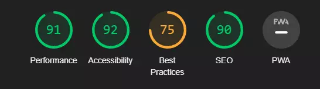
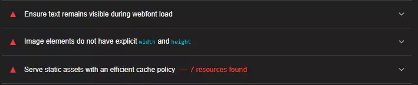
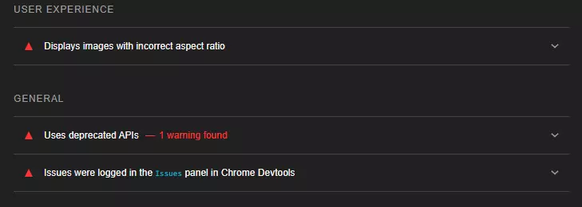
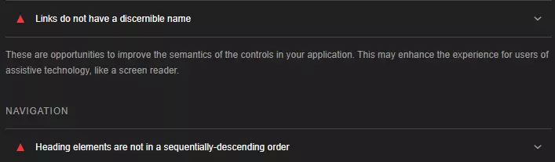
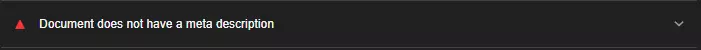
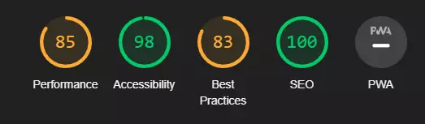

Dokumentasjon av analyse
Jeg brukte Lighthouse til å analysere siden min. Dette er hva jeg fikk opp før jeg endret noe som helst. Resultatet var ganske greit, men selvfølgelig prøvde jeg å forbedre de ulike kategoriene så mye så mulig, for å få det til å bli enda bedre.
Performance
Innenfor Performance så fikk jeg opp dette:
På bildet øverst på index siden min fikk jeg opp at bildet ikke hadde fått satt opp ordentlig width og height, så la til height inne på css, hadde allerede en width på den, men ikke height. Jeg valgte også å gjøre om bildene mine fra jpg/png til webp, for å forhåpentligvis hjelpe på performance for siden. Det minimerer ihvertfall størrelsen på alle bildene, sånn at det ikke tar opp like mye plass.
Best Practices
Innenfor Best Practices så fikk jeg opp dette:
En av tingene jeg fikk opp var at bilde ration på bildene på artikkel delen av index siden ikke stemte med hvordan det faktiske ration skulle være.
Accessibility
Innenfor Accessibility så fikk jeg opp dette:
For linkene til sosiale medie knappene så la jeg til aria-label for å legge til tekst til linken.
SEO
Innenfor SEO fikk jeg kun opp en ting, og det var at jeg manglet meta tag i head tagen min øverst på alle sidene mine. Dette ble da fikset ved å legge en meta tag øverst på siden min, i head-tagen. Dette ble lagt inn øverst på alle sidene. 
Sluttresultat
Etter å ha gjort ferdig analysen min, er dette det jeg fikk opp: 
Jeg prøvde å fikse det meste jeg kunne, for best mulig resultat, og vil si at resultatet jeg fikk er jeg fornøyd med. Litt usikker på hvorfor Performance gikk ned litt, men prøvde å fikse så best så mulig. Neste steg nå blir å gå gjennom tilgjengelighetsærkleringen og se hva jeg kan få gjort der. En Heuristisk Evaluering av siden vil også bli tatt.